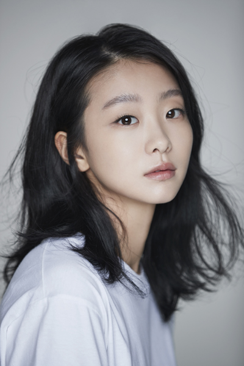

No.2 한예슬
- 이름: 한예슬(Han Ye seul)
- 본명: 김예슬이(Kim Ye Seul), 레슬리 김(Leslie Kim)
- 출생년도: 1981년 9월 18일
- 출생지: 미국 캘리포니아주 로스앤젤레스
- 학력: 세리토스 전문대학 컴퓨터그래픽학과
- 소속사: 파트너즈파크
- 대표작: 환상의 커플, 미녀의 탄생
- 대표 수상이력: 제 43회 백술예술대상 - 여자 우수상
| 환상의 커플 | 미녀의 탄생 |

|

|
|---|
|  |
|
|
|
|
|
|